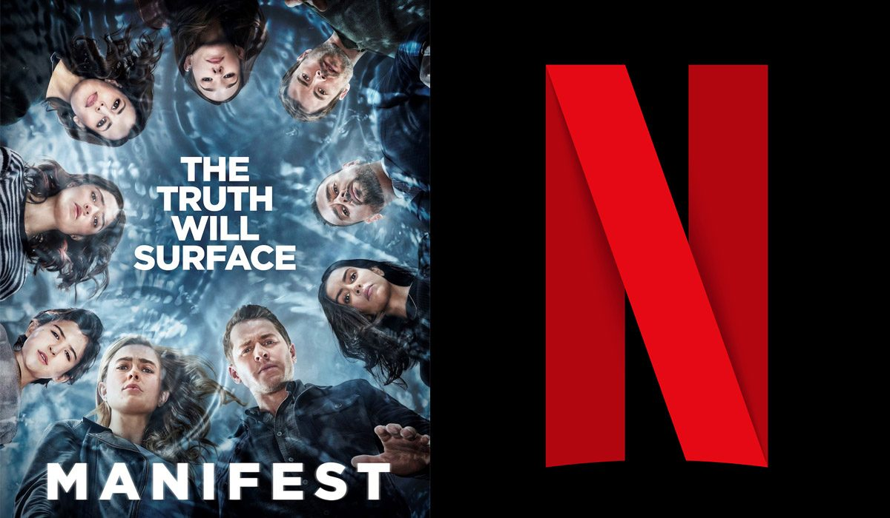

Manifest in het kort
Manifest is een Amerikaanse bovennatuurlijke dramaserie, dat te zien is op Netflix. Gemaakt door Jeff Rake, die op 24 september 2018 in première ging op NBC. De serie draait om de passagiers en de bemanning van een commercieel vliegtuig dat plotseling weer verschijnt na vijf jaar lang verdwenen te zijn geweest.
Montego Air-vlucht 828 van Jamaica naar New York ervaart een korte periode van bliksem en zware turbulentie. Wanneer ze landen, vernemen de passagiers en de bemanning van NSA directeur Robert Vance dat er meer dan vijf en een half jaar zijn verstreken tussen het opstijgen en het landen van de vlucht, gedurende welke tijd men dacht dat ze dood waren. Terwijl ze opnieuw integreren in de huidige samenleving, beginnen de passagiers het feit onder ogen te zien dat niets meer is zoals het vroeger was, terwijl ze ook sturende stemmen en visies ervaren die gebeurtenissen vertegenwoordigen die nog moeten plaatsvinden.